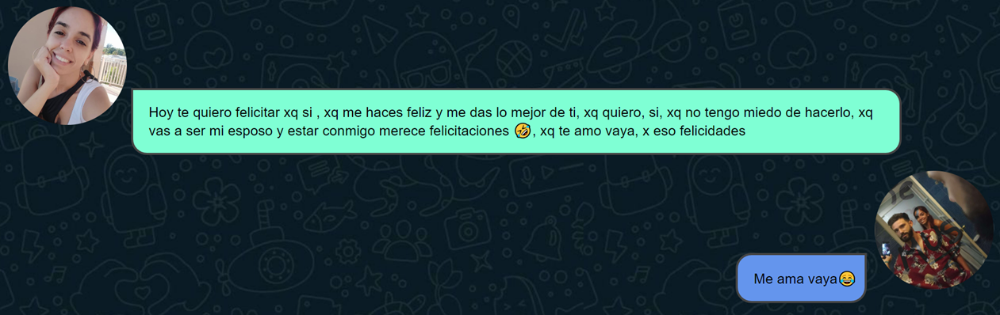

Mira como ha avanzado esto
Hola, hice esto para ti,me ha tomado muuuuuucho tiempo y esfuerzo,
me ha tocado luchar contra las ganas de mostrarte cada avance q daba, no ha sido facil
y llevo mucho tiempo creandolo para q estuviera listo hoy.
Recuerdo muy claramente cada regalo que me has hecho, lo recuerdo y lo he guardado en mi memoria
entonces hoy tratare de recrear esto, todos nuestros recuerdos para ti.
Ya ni se cuanto ha pasado desde que estamos juntos, espero que eso continúe de esa forma xq la verdad no me importa el tiempo, hace rato deje de medirlo, asi como hace rato vengo cocinando como hacer esto
No tengo idea de como va a quedar, no lo se, ni siquiera se si esté listo a tiempo o si nunca va a estarlo, se que me voy a esforzar, xq quiero construir algo q valga la pena, me lancé listo, asi como lo hic un día contigo
También perdón cuando leas esto si te suena a retazos, es que la verdad, esta hecho a presizamente eso pedacitos de hoy y de ayer. Lo mas bonito del caso es que esta es su escencia, aqui vas a ver pedacitos y pedacitos de meses, semanas y días
Se lo mucho que esá costando todo, mira que lo se, pero creo que es necesario que esta paginita quede aquí, peremne en el tiempo de lo que construímos en un año loco, uno que quizás no se repita, muy probablemente, xq ser adulto es dificil y vamos aprendiendo para ser una mejor version de cada uno, a ti, x eso, Gracias, para tis soy de tus, yo TE MUS
 Tu regalo